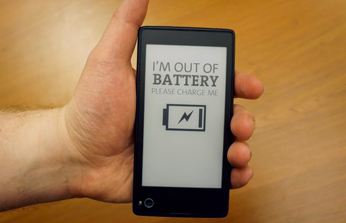

Приятно знать, что компания из России смогла довести смартфон своей собственной разработки до стадии рыночного продукта. Однако судя по многочисленным комментариям и отзывам с Lenta.ru, Mobile-Review, Svyaznoy.ru удивить новинкой публику не удалось. Народ сразу смекнул что к чему и откровенно не понял почему он должен платить $600, в то время когда на полках лежат именитые, проверенные временем и вполне «нафаршированные» смартфоны. Такая реакция людей была вполне предсказуема, а значит была возможность спозиционировать продукт иначе.
При подготовке к запуску продукта важно — не обещать того, что не сможешь выполнить, ведь потом спросят за каждое слово. Излишний акцент рекламной кампании на возможности длительной автономной работы «Йотафон всегда включен» явно был преувеличением — ведь из описания было ясно что не произойдёт чуда, 2 экрана потребляют вместе больше чем один, да и второй экран могут использовать только специальные приложения, то есть для пользователя его применение ограничено.
Совсем другое дело если бы это был телефон только с одним e-Ink дисплеем и всеми возможностями системы Android на нём. Также видно, что многим не понравился пиар посыл о истинно «русском» изобретении, да и впутывание сюда госчиновников лишь подлило масла в огонь негативного восприятия, мол опять «ё-мобиль»!
Итак что можно было бы сделать имея в цехах такой неоднозначный продукт? Как бы стоило его преподнести публике?
0. Явно не стоит упоминать имя Apple и её продукты, не пользоваться госчиновниками/звёздами как инструментом продвижения. Нужно добиться реального инженерного превосходства, тогда и чиновники сами купят в магазине да и Apple «напряжется»;
1. Стоит признать что первый раз вышло «не очень». А значит надо подумать не о том как с ним можно заработать деньги, а о том как эту работу направить себе во благо. Что лучше — агрессивно продавать его ценой репутации или всё же получить дивиденды от разработки? По рынку видно его идеальный ценник — $300 и это лучше чем ноль и лучше чем продажи нескольких тысяч штук за $600. Зато адекватность цены сразу даст адекватные отзывы, обзоры и мнения — что для нового продукта основа выживания.
2. Не позиционировать его широкой потребительской аудитории. Да, именно так — в нишу его! Сузив аудиторию, выиграем в восприятии модели. Куда именно? Ответ давно дал Google с модельным рядом Nexus: в руки разработчикам.
«YotaPhone Developer Edition» Звучит, правда?
Это бы дало:
3. На основе полученного опыта выпустить YotaPhone 2, обязательно предварительно обкатав его среди самых активных приверженцев из пункта 2.